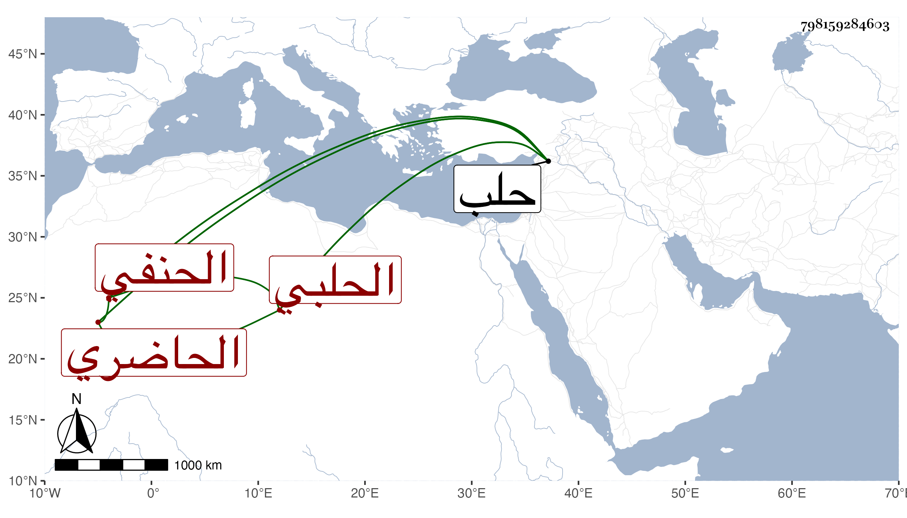

0902Sakhawi.DawLamic.ITO20230111-ara1.EIS1600.798159284603
Biography ID: 798159284603
333
أحمد بن محمد بن خليل بن هلال بن حسن الشهاب بن العز الحاضري الحلبي الحنفي الآتي أبوه . ولد في سادس شوال سنة أربع وثمانين وسبعمائة بحلب وسمع بها على الشهاب بن المرحل إلى الطلاق من النسائي وأجاز له الشمس العسقلاني المقري ومحمد بن محمد بن عمر بن عوض وغيرهما وحدث سمع منه الفضلاء . لقيته بحلب وقد شاخ وكف فقرأت عليه من أول النسائي جزءا وكان خيرا كثير المحافظة على التلاوة الحسنة وشهود الجماعات مداوما على السبع في الجامع الكبير نحو أربعين سنة حسن المعرفة بالتعبير مشهورا به صنف به حادي العبير في علم التعبير ، وحفظ في صغره المختار واشتغل على أبيه وغيره ، ولم يل القضاء كأخوته ولذا كان البرهان الحلبي يقدمه ، بل أقام مدة يتكسب من صناعة الحرير وهي عقد الأزرار فلما كف تعطل . مات في حدود سنة ستين ظنا .
